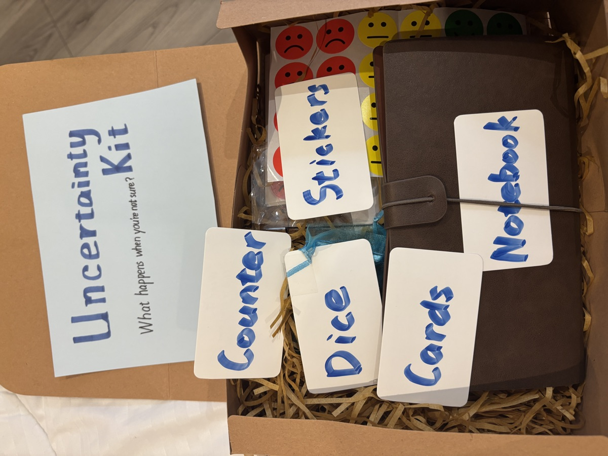
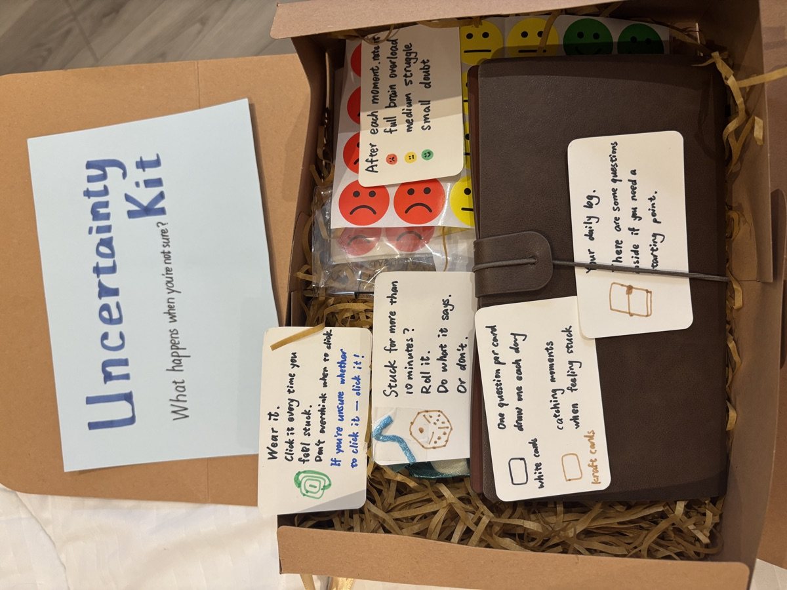
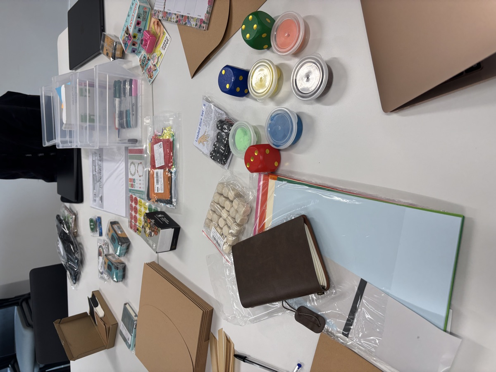
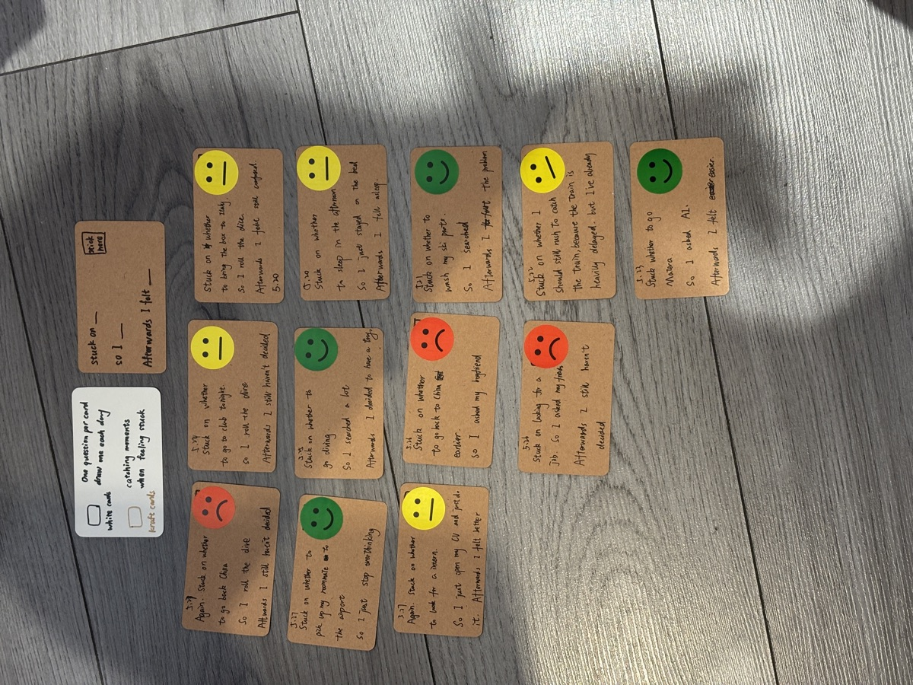
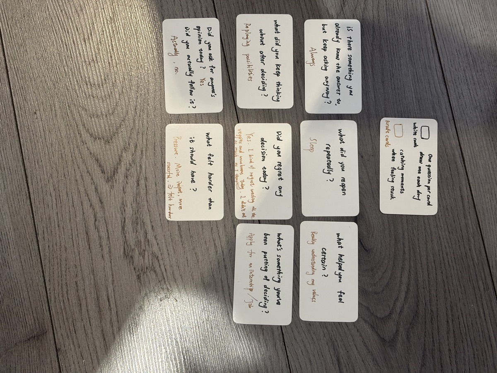
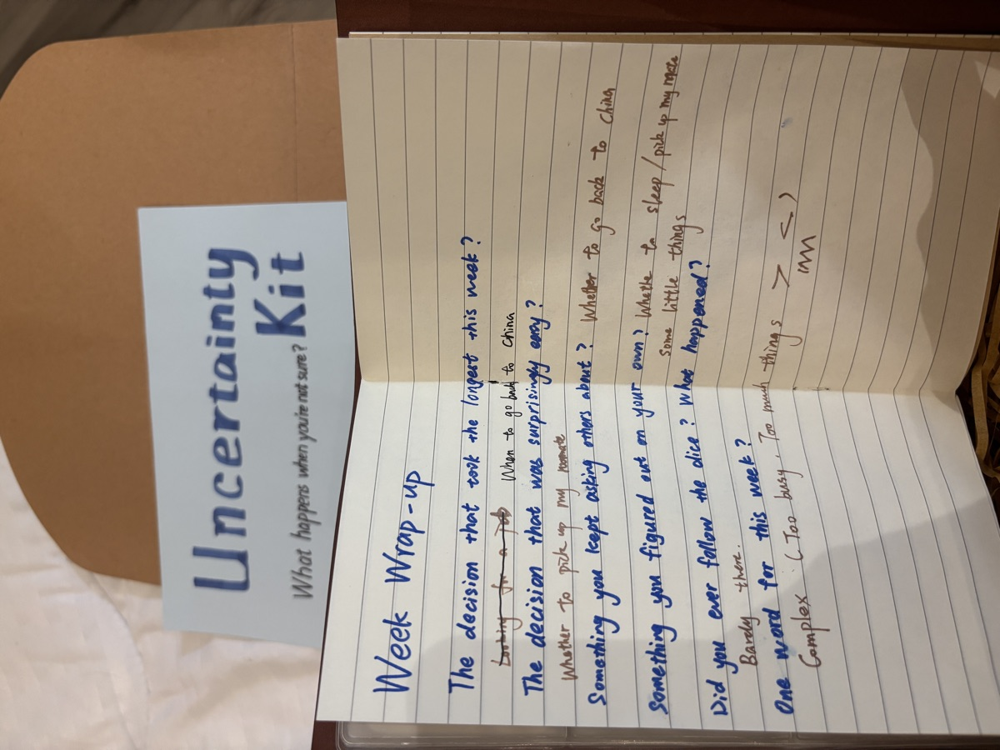
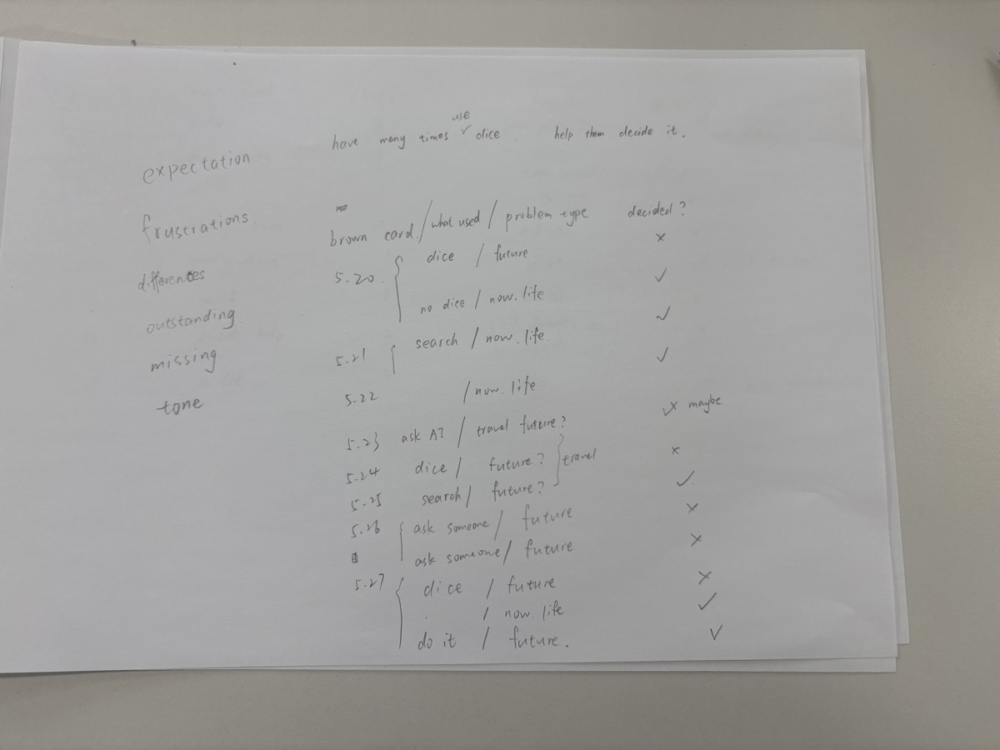
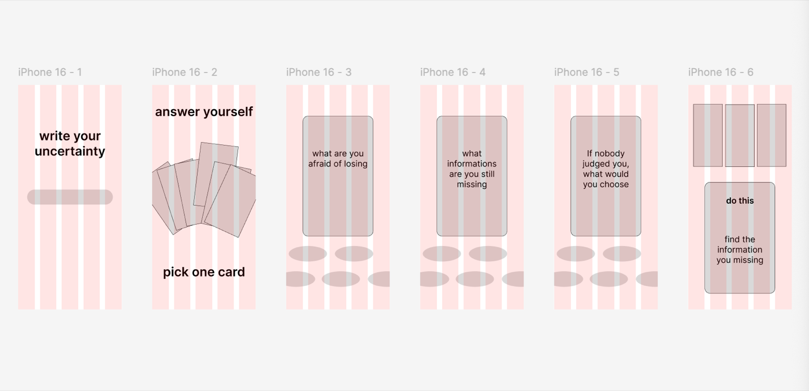
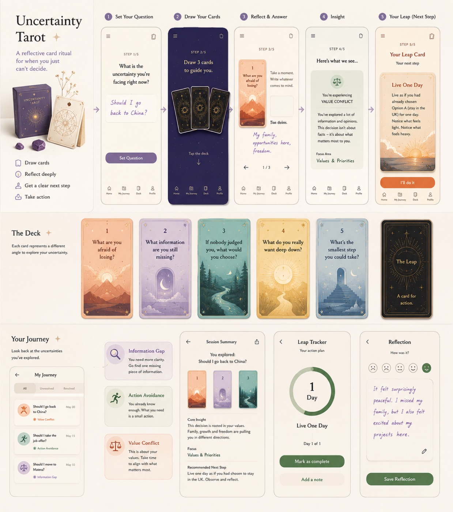
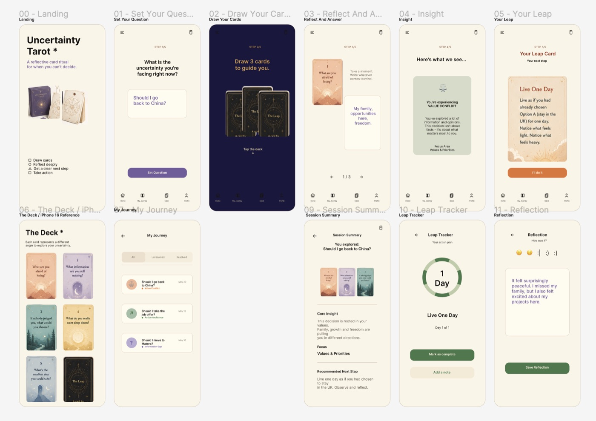

CULTURAL PROBE · 田野研究
文化探针
文化探针（Cultural Probe）是一种设计研究方法：把一组带提示的小道具交到参与者手里，让他们在日常生活里自行记录观察与感受，作为后续设计的原始素材。这是我在 UAL「Human-Centred Approaches in Data Science」课程里做的一次完整实践——从探针设计、制作，到发放回收，再到把回收结果转化成原型。
概览
比起访谈里被整理过的答案，文化探针想拿到的是「用户自己都没意识到」的真实碎片。整个过程走了一条完整的链路：设计 → 制作 → 使用与回收 → 分析 → 原型。

设计与制作
把设计好的探针做成实体：一套可以交到参与者手里的材料，加上一份清晰的使用说明——让参与者知道每天要做什么、怎么记录。



使用与回收
探针里主要是两类记录卡：① 记录「犹豫 / 纠结」的时刻；② 每天挑一个问题作答。参与者按天填写，最后汇总成一份周记式的总结。



分析与原型
把回收的探针结果做统计分析，提炼出可设计的洞察；据此画低保真结构，再用 AI 生成视觉参考与高保真效果稿，形成从研究到界面的连贯路径。




演示
一段把原型作为 AI 生成效果稿呈现的短演示，展示最终交互在使用时的感觉。
反思
文化探针最大的价值是——它让我拿到了「用户自己都没意识到」的真实碎片，而不是访谈里被整理过的答案。难点在于参与者是否愿意持续填写：说明卡的门槛越低、越有趣，回收质量越高。这套「从探针到原型」的方法，也直接影响了我后来做产品时的用户研究方式。